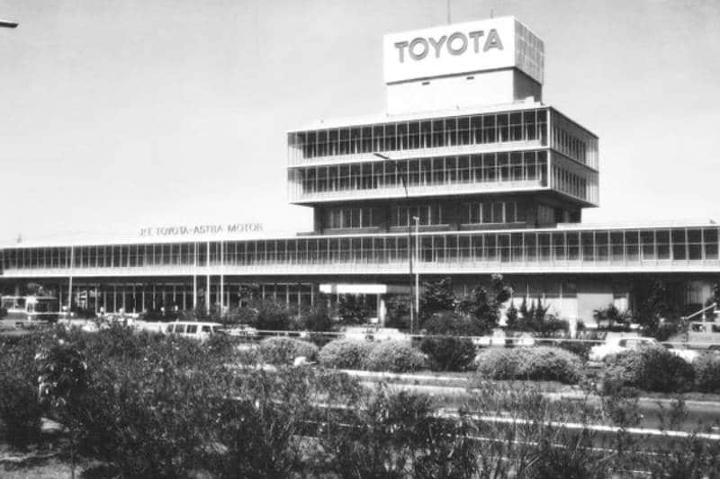
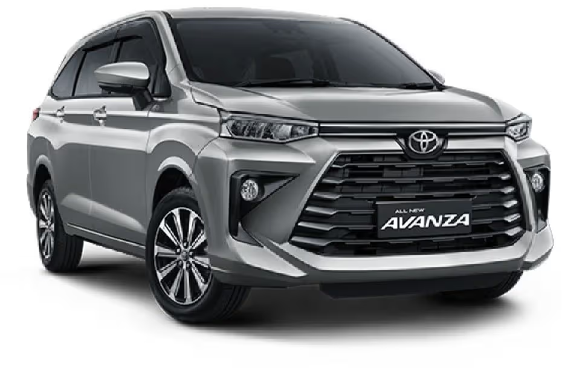
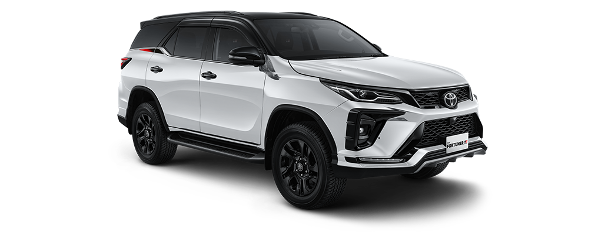
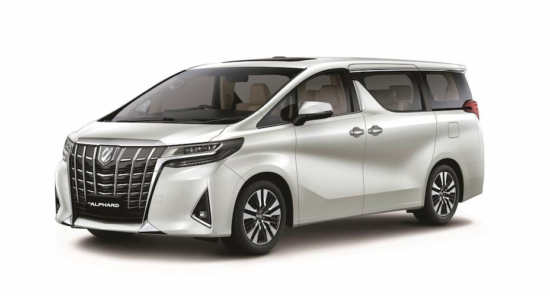
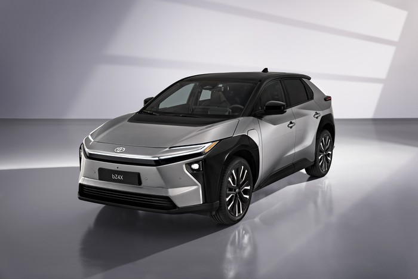
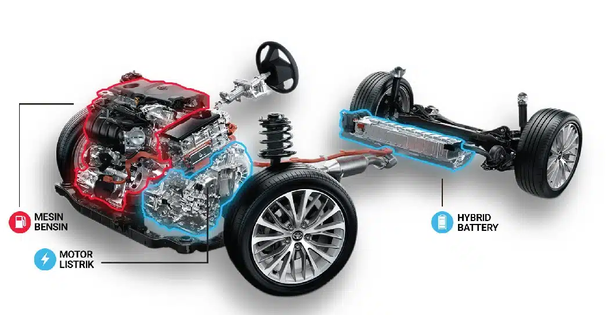

Perusahaan otomotif terkemuka yang menghadirkan inovasi dan kualitas dalam setiap kendaraan.
Sejarah Toyota

Toyota didirikan oleh Kiichiro Toyoda pada tahun 1937 sebagai spin-off dari perusahaan induknya, Toyota Industries.
Sejak saat itu, Toyota berkembang menjadi salah satu produsen mobil terbesar di dunia.
Model Kendaraan
Toyota menawarkan berbagai jenis kendaraan, mulai dari mobil keluarga hingga kendaraan ramah lingkungan.
Toyota Avanza

Toyota Avanza adalah kendaraan MPV yang populer di Indonesia dengan desain modern dan kenyamanan maksimal.
Didesain untuk keluarga Indonesia, Avanza menawarkan kabin yang luas dengan kapasitas hingga 7 penumpang,
didukung oleh mesin bertenaga yang irit bahan bakar.
Mesin 1.3L atau 1.5L
Konsumsi BBM: 15.9 km/L
Kapasitas 7 Kursi
Fitur Keamanan Lengkap
Toyota Fortuner

Toyota Fortuner adalah SUV berkelas yang menawarkan perpaduan antara desain elegan, performa tangguh, dan teknologi canggih
untuk kenyamanan serta keamanan berkendara. Ditenagai oleh mesin bensin atau diesel yang efisien, Fortuner hadir dengan
pilihan penggerak 4x2 maupun 4x4, memungkinkan mobil ini melaju dengan stabil di berbagai medan.
Dimensi
4.795mm x 1.855mm x 1.835mm
Mesin
2.4L Diesel / 2.7L Bensin
Transmisi
6-speed Automatic
Kursi
7 Seater
Toyota Alphard

Toyota Alphard adalah MPV mewah premium yang menawarkan kenyamanan ekstra dan kemewahan kelas atas.
Dikenal sebagai kendaraan eksekutif, Alphard menawarkan interior yang luas dengan bahan-bahan berkualitas tinggi
dan berbagai fitur hiburan canggih untuk penumpang.
Dimensi
4.945mm x 1.850mm x 1.895mm
Mesin
2.5L Bensin Hybrid / 3.5L V6
Transmisi
CVT / 8-speed Automatic
Kursi
7-8 Seater
Interior mewah dengan jok kulit
Dual power sliding door
Dual sunroof
Sistem hiburan belakang layar ganda
Kabin kedap suara
Fitur keselamatan Toyota Safety Sense
Toyota bZ4X

Toyota bZ4X adalah SUV listrik pertama dari Toyota yang mengusung konsep ramah lingkungan dengan performa tangguh.
Sebagai bagian dari Beyond Zero (bZ) series, bZ4X menawarkan pengalaman berkendara yang menyenangkan dengan nol emisi
dan teknologi mutakhir yang memadukan kenyamanan, keamanan, dan efisiensi energi.
Daya Maksimum
218 PS (FWD) / 217 PS (AWD)
Jarak Tempuh
Hingga 516 km (WLTC)
Baterai
71.4 kWh Lithium-ion
Pengisian Cepat
80% dalam 30 menit (150 kW)
Desain futuristik dengan aerodinamika optimal
Dual motor AWD dengan X-MODE untuk berbagai kondisi jalan
Solar roof panel untuk efisiensi energi tambahan
Advanced Safety Package dengan Toyota Safety Sense
Layar sentuh 12.3 inci dengan konektivitas penuh
Kabin luas dengan material ramah lingkungan
Teknologi

Toyota terus berinovasi dalam teknologi otomotif dengan menghadirkan mobil listrik yang ramah lingkungan,
sistem hybrid yang efisien dalam konsumsi bahan bakar, serta fitur keselamatan canggih.
Hybrid Technology
Kombinasi mesin bensin dan motor listrik untuk efisiensi bahan bakar yang lebih baik.
Toyota Safety Sense
Sistem keselamatan canggih yang mencakup pengereman darurat, peringatan keberangkatan jalur, dan kontrol jelajah adaptif.
Eco Technology
Teknologi ramah lingkungan dengan emisi rendah dan konsumsi bahan bakar yang efisien.